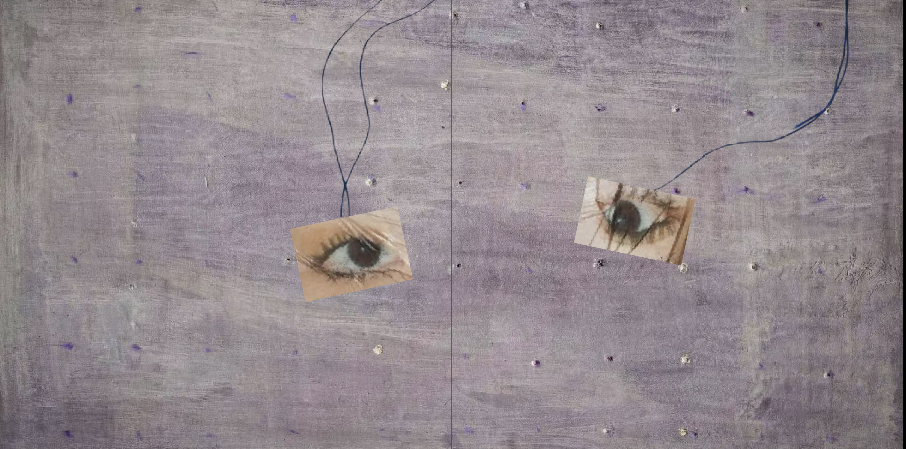
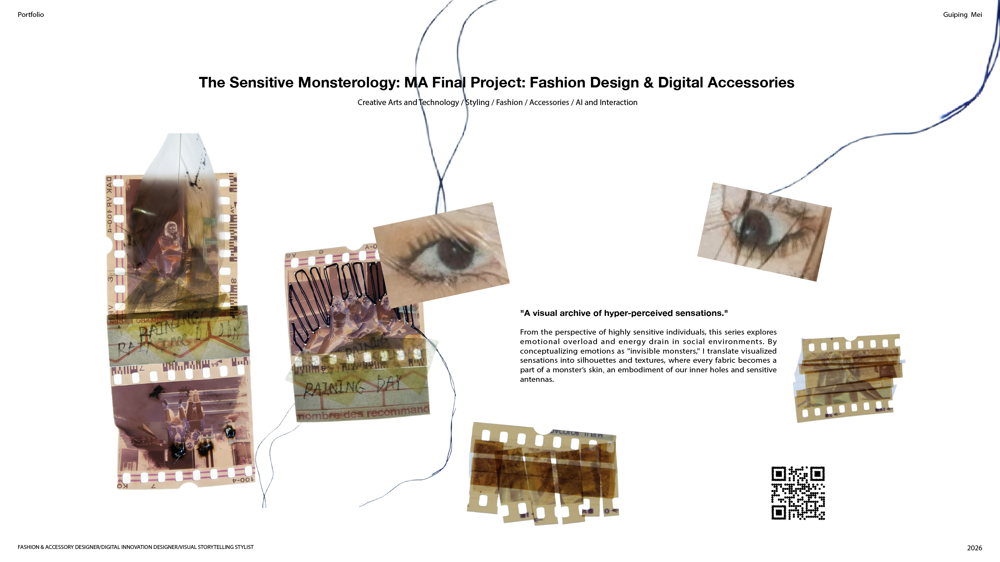
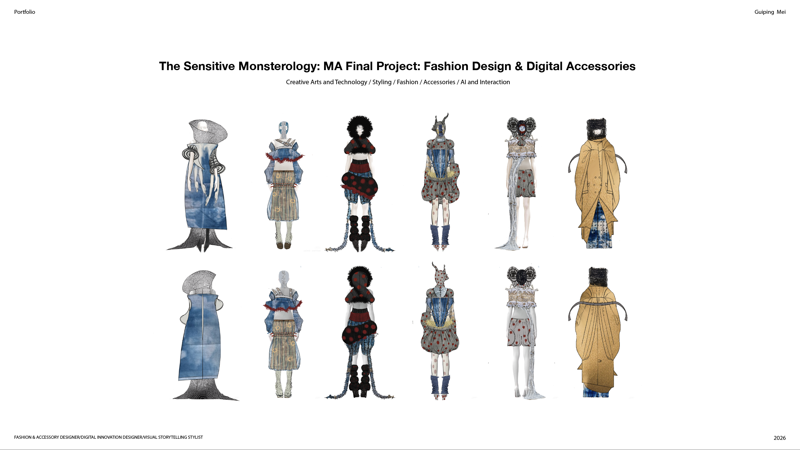

PROJECT OVERVIEW
Telling the Story of the Monster as I See It.
"A visual archive of hyper-perceived sensations." From the perspective of highly sensitive individuals, this series explores emotional overload and energy drain in social environments.
2026
Moving image · Fashion design
01
02

03
